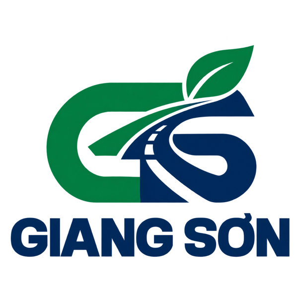

Thông Tắc Cống
Tại Hà Nội
Thông cống nghẹt • Thông bồn cầu • Thông chậu rửa bát, lavabo.
Trực tiếp thi công, không qua trung gian. Báo giá rõ ràng trước khi làm.


📞 0985.339.932Thông cống nghẹt • Thông bồn cầu • Thông chậu rửa bát, lavabo.
Trực tiếp thi công, không qua trung gian. Báo giá rõ ràng trước khi làm.
Cống nghẹt, bồn cầu tắc gọi là có thợ hỗ trợ
Thông bằng máy lò xo / máy chuyên dụng, hạn chế đục phá
Xem đúng vị trí tắc rồi mới báo giá
Báo giá trước khi làm, không mập mờ, không vẽ thêm việc
Thông xong dọn sạch khu vực làm việc
Trực tiếp thi công, kể cả tối và cuối tuần
Cống nhà tắm, ban công, sân thượng thoát chậm, trào ngược, có mùi hôi — xử lý triệt để tận gốc.
Bồn cầu tắc giấy, vật lạ, thoát chậm hoặc trào ngược. Thợ xử lý gọn, không làm bẩn nhà vệ sinh.
Chậu rửa bát tắc dầu mỡ, lavabo tắc tóc và cặn bẩn lâu ngày — thông bằng máy, không cần tháo dỡ lớn.
Đường ống nước thải nhà phố, tập thể, chung cư, nhà hàng, khách sạn. Nhận cả công trình và hộ gia đình.
Nạo vét hố ga, đường cống ngầm bị bùn đất, rác thải bồi lắng lâu ngày gây tắc nghẽn diện rộng.
Sau khi thông, thợ hướng dẫn cách dùng để hạn chế tắc lại: lọc rác, xử lý dầu mỡ, vệ sinh định kỳ.
Mô tả vị trí tắc (cống, bồn cầu, chậu rửa) và địa chỉ nhà.
Thợ kiểm tra thực tế, báo giá rõ ràng trước khi làm.
Dùng máy chuyên dụng thông triệt để, hạn chế đục phá.
Xả nước kiểm tra thông thoáng, dọn sạch rồi mới thanh toán.
Đội thợ xuất phát tại Ngõ 2 Hoàng Quốc Việt, Cầu Giấy — ưu tiên khu vực lân cận, phục vụ toàn Hà Nội.
Chi phí phụ thuộc vào vị trí tắc (cống, bồn cầu hay chậu rửa), mức độ tắc nặng hay nhẹ và chiều dài đường ống. Bên em kiểm tra thực tế và báo giá rõ ràng trước khi làm — khách đồng ý mới thi công. Gửi ảnh/video vị trí tắc qua tin nhắn hoặc gọi hotline để được tư vấn nhanh nhất.
Phần lớn trường hợp thông bằng máy chuyên dụng qua miệng cống / bồn cầu, không cần đục phá. Chỉ khi đường ống bị vỡ, sụt hoặc vật cứng mắc sâu, thợ mới trao đổi phương án xử lý riêng trước khi làm.
Thợ thông triệt để tận gốc tắc và xả nước kiểm tra trước khi bàn giao, đồng thời hướng dẫn cách sử dụng để hạn chế tắc lại. Nếu tắc do dầu mỡ hoặc tóc tích tụ lâu ngày, nên vệ sinh đường ống định kỳ.
Có. Giang Sơn phục vụ 24/7, kể cả buổi tối, cuối tuần và ngày lễ — cống tắc lúc nào gọi lúc đó.
Giang Sơn còn vận chuyển phế thải / trạc xây dựng và thu gom rác công trình tại Hà Nội. Khách cần dọn phế thải sau sửa nhà có thể gọi chung một đầu mối hotline 0985.339.932.